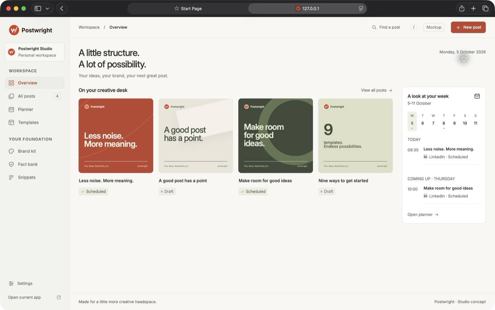
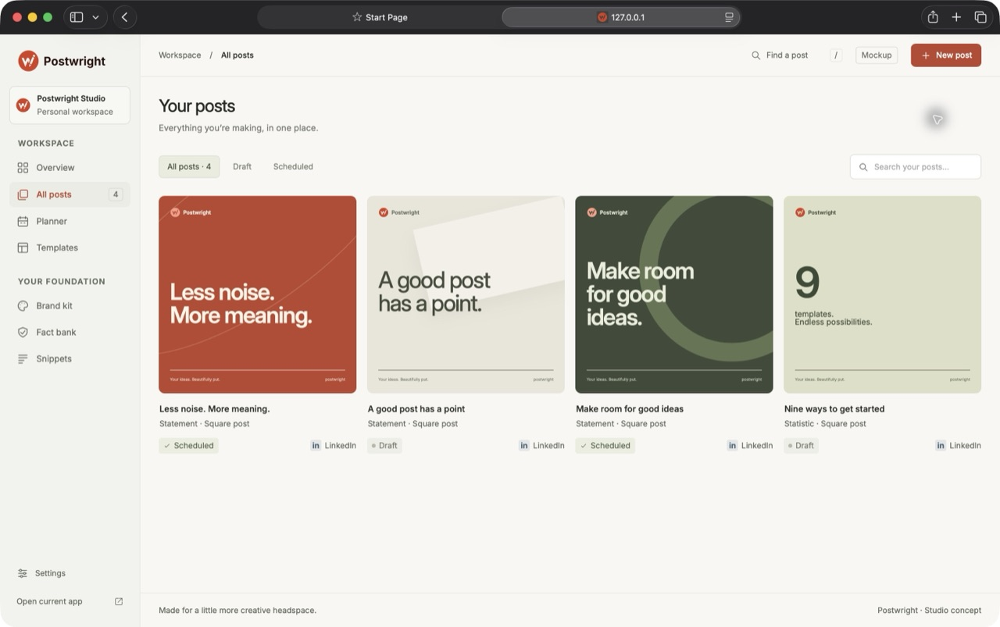
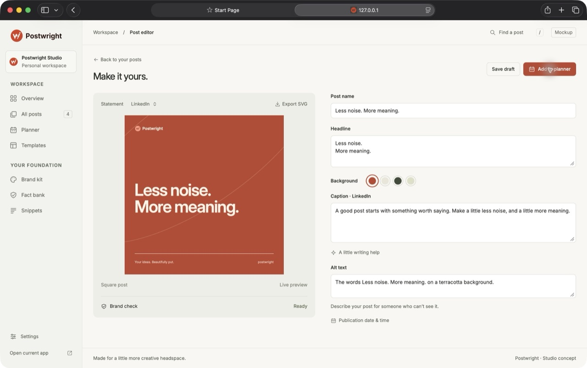
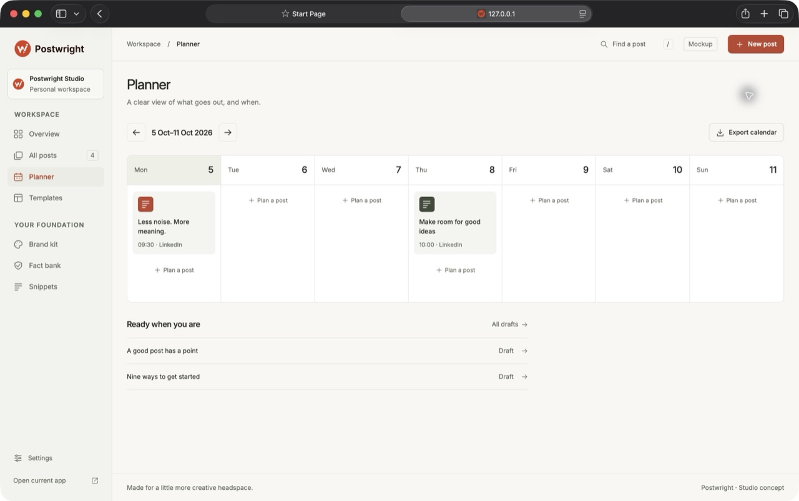
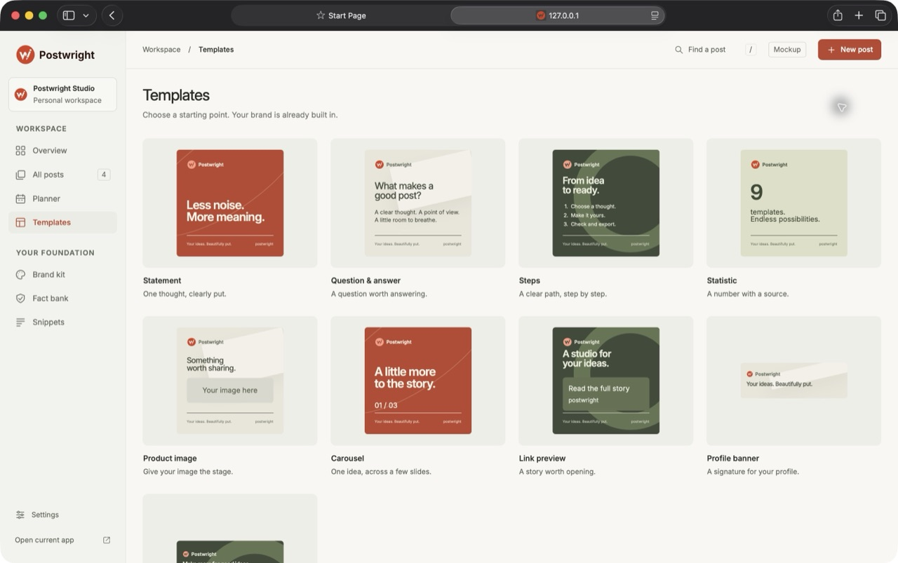
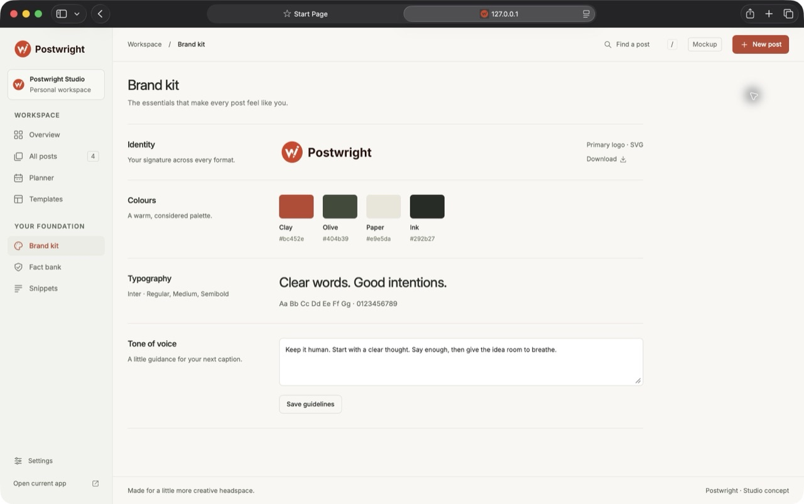
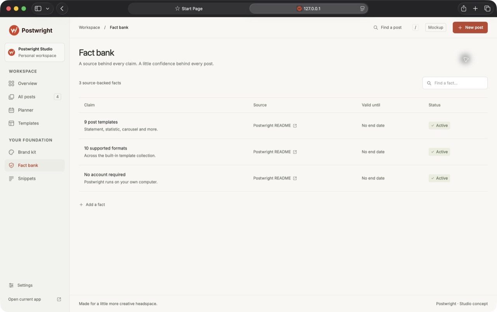
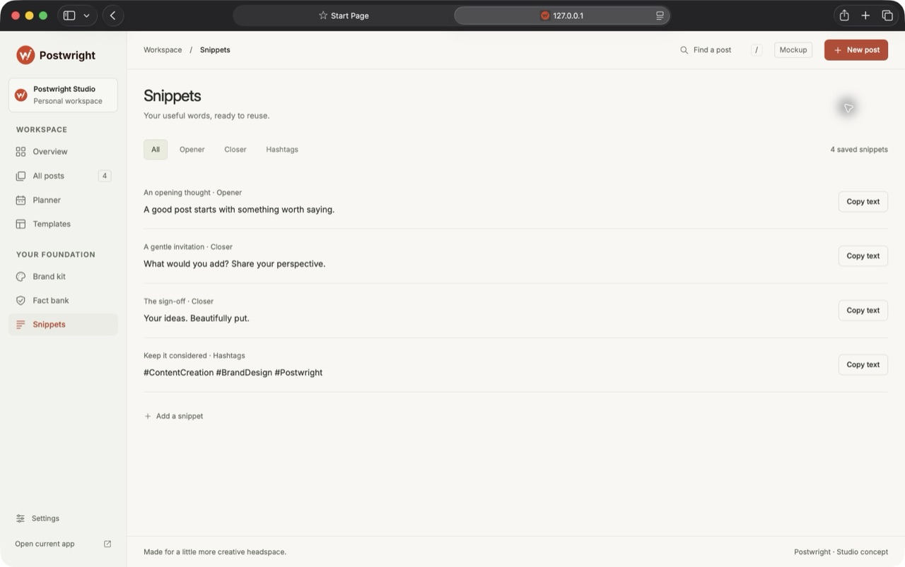
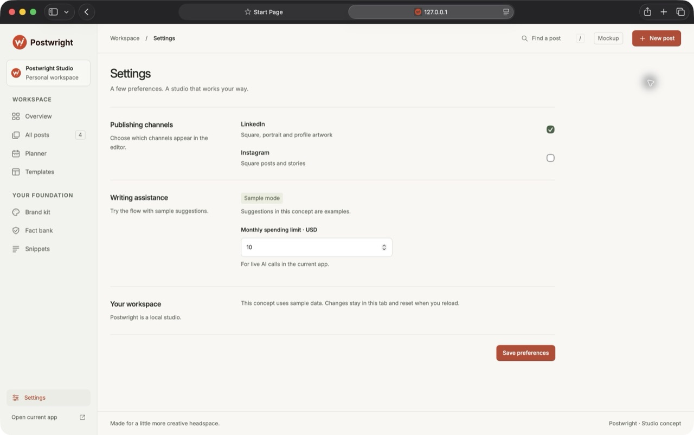

Dashboard
A quiet view of your posts and week.
Nine pages. One considered design. Open any screen to try the flow.

A quiet view of your posts and week.

Browse, filter and find your work.

Write, preview, check and plan.

Give your content a clear rhythm.

Nine starting points for your ideas.

Your logo, colours, typography and voice.

Keep your claims close to their sources.

Useful words, ready to reuse.

Channels and writing preferences.